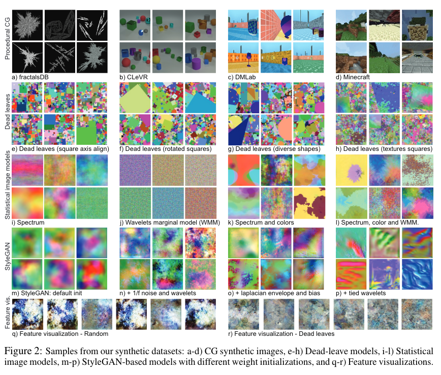
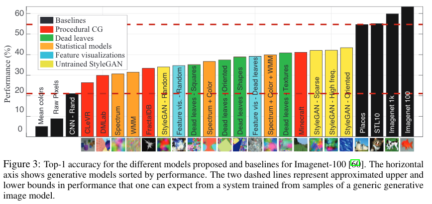

What if we’ll be able to train vision NN model with 0, nil, nada real world examples? But we have to train on something, right? Surely training on a pure noise won’t give us anything useful? See CNN-Rand or StyleGAN-Random (both initialized randomly, no training whatsoever) below and you will be surprised! Moreover if we construct synthetic images that are closer to the real world images, can we train on it with some positive outcomes? But then how well can we train? Paper presented below tried to answer that question.
Unless tagged otherwise, ideas in this blog post come from the Learning to See by Looking at Noise paper, recorded presentation by Antonio Torralba who is one of the authors and presentation by Rosanne Liu during Deep Learning: Classics and Trends.
Rationale for this exercise
Models are more and more reliant on data. CLIP need 400 000 000 images to be trained well for example. What if we could build a synthetic dataset to train? Why:
- you don’t have access to data
- cheaper to maintain the data
- maybe generating a good synthetic dataset can be better than real data (no human bias for example)
Task
The training objective is classification of ImageNet-100 images.
Training procedure
It is done in 2 stages:
- The “base” network is trained using unsupervised contrastive learning (simplifying it is done by identifying if images are the same or come from the same source image with transformations applied; details of the specific approach used in the paper)
- Final layer (but could be layers I think) are trained briefly on actual data to create a head of the model (to me it was not clear reading the paper but see this training script by authors)
Technicalities derived from the code:
- unsupervised part (1):
- model parameters: TBD
- epochs: 200
- time: TBD (most expensive part)
- supervised part (2):
- model parameters: TBD
- epochs: 100
- time: TBD (but as it is training just single fc layer, this will be cheap)
Datasets
See this image of datasets used in this experiment which are referred blow on the benchmark graph.

Results

Black bars are different baselines and coloured bars represent various sythetic datasets. About 20% is a difference between the best model trained on actual images and best model pre-trained on synthetic images. The surprising bit is, that randomly initialized networks can give much better than chance results (and random choice is 1% as we have 100 classes): CNN - Rand and StyleGAN - Random. The explanation was, that last fully connected layer will give some performance boost, but Antonio in his video also mentions that even some of those randomly initialized “features must be useful to some degree”. So for example in CNN some of the filters extract information that is then used by linear layer to reason upon.
My Conclusions
Can this approach democratize access to data, as currently data collection and maintenance is being more and more concentrated? It looks like it, but for now it comes at the cost of performance. There was also a lot of laughter during the Antonios presentation about Stable Diffusion, so I have to add that: what would be the result if data was generated by SD model?